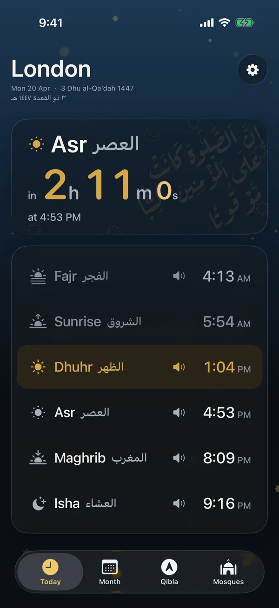
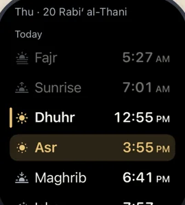

আপনার দিনে নামাজের জন্য জায়গা রাখুন
iPhone ও Apple Watch-এ নামাজের সময়, আজান ও কিবলা। নামাজের সময় আপনার ফোনেই হিসাব করা হয়, তাই অফলাইনেও কাজ করে।




আপনার কাছের মসজিদ
হেঁটে, গাড়িতে ও গণপরিবহনে যাওয়ার সময়, তারপর Apple ম্যাপস, Google ম্যাপস বা Waze-এ দিকনির্দেশনা।
পরবর্তী নামাজের কাউন্টডাউন
আজকের পাঁচ ওয়াক্ত নামাজ ও সূর্যোদয়, আর পরবর্তী নামাজের আর কত সময় বাকি।
AR-এ কিবলা
মেঝেতে দেখানো পথ ধরে কাবার দিকে এগিয়ে যান, অথবা কম্পাস ব্যবহার করুন।
আপনার কাছের মসজিদ
হেঁটে, গাড়িতে ও গণপরিবহনে যাওয়ার সময়, তারপর Apple ম্যাপস, Google ম্যাপস বা Waze-এ দিকনির্দেশনা।
AR-এ কিবলা
মেঝেতে দেখানো পথ ধরে কাবার দিকে এগিয়ে যান, অথবা কম্পাস ব্যবহার করুন।
App Store-এ গড় রেটিং
5.0
Great app
The athan is clear and beautiful, the prayer times are accurate, and the reminders arrive right when I need them. Everything is clean and intuitive, with no clutter or confusing menus.
Hiba B. · United States
Neat design, no ads
It’s nice to hear the Athan here in Mountain View, even if it’s from my phone. I really liked the map view of nearby mosques.
Mohammad M. · United States
Excellent app
Simple, user-friendly, and very helpful for keeping track of prayer times. Highly recommended.
Hamzah A. · United States
برنامج أكثر من رائع!
أول برنامج مجاني بدون إعلانات. خلفية مريحة جدا ومواقيت صلاة دقيقة.
نور الهدى · الولايات المتحدة
প্রতিটি নামাজের ডাক
সময়মতো আজান
প্রতিটি নামাজের জন্য আলাদাভাবে বেছে নিন: পুরো আজান, টোন বা নীরব।
ওয়াক্ত শেষ হওয়ার আগে
নামাজের ওয়াক্ত শেষ হওয়ার ৫ থেকে ৬০ মিনিট আগে রিমাইন্ডার, যাতে ব্যস্ত বিকেলেও আসর কাজা না হয়।
লক স্ক্রিনে কাউন্টডাউন
লাইভ অ্যাক্টিভিটি লক স্ক্রিনে ও Dynamic Island-এ পরবর্তী নামাজ পর্যন্ত কাউন্টডাউন দেখায়।
Thursday 26 November
7:30
 Isha العشاء
Isha العشاء
at 7:57 PM
27:12
Maghrib ends soon3m ago
30 min left in Maghrib time. Pray if you haven’t yet.
Maghrib prayer49m ago
It’s time for Maghrib prayer.
আপনার কবজিতে
আজকের নামাজের সময়, কিবলা কম্পাস এবং ঘড়ির ফেসে কাউন্টডাউন, কমপ্লিকেশন ও স্মার্ট স্ট্যাকে।

আজকের নামাজ
পাঁচ ওয়াক্ত ও সূর্যোদয়, পরবর্তী নামাজটি চিহ্নিত।

আপনার ঘড়ির ফেসে
পরবর্তী নামাজ ও তার কাউন্টডাউন, কমপ্লিকেশনে।

কিবলা
কবজিতে একটি কম্পাস, মক্কার দিকে মুখ করলেই সবুজ হয়ে যায়।
পাঁচ ওয়াক্ত নামাজ ঘিরে সবকিছু
অফলাইনে নামাজের সময়
নামাজের সময় ও কিবলা আপনার ফোনেই হিসাব করা হয়। লোকেশন একবার সেভ হয়ে গেলে আর নেটওয়ার্ক লাগে না।
আপনার মসজিদের সময়
আপনার দেশের হিসাবের পদ্ধতি, শাফেয়ি বা হানাফি আসর, এবং প্রতিটি নামাজের জন্য মিনিট ধরে সমন্বয়।
এক পৃষ্ঠায় পুরো মাস
মাসিক সময়সূচি, যা এক পৃষ্ঠার PDF হিসেবে শেয়ার বা প্রিন্ট করতে পারবেন।
সুন্নত দিনগুলো
জুমা, আইয়ামে বীয, সোমবার ও বৃহস্পতিবার, আরাফা, আশুরা এবং রাতের শেষ তৃতীয়াংশের রিমাইন্ডার।
উইজেট
আজকের নামাজ ও পরবর্তী নামাজ, আপনার হোম স্ক্রিনে ও লক স্ক্রিনে।
Siri ও শর্টকাট
Siri-কে জিজ্ঞেস করুন পরবর্তী নামাজ কখন, অথবা এটি কোনো শর্টকাটে যোগ করুন।
হিজরি তারিখ
আজকের তারিখের পাশেই, আর আপনার এলাকার চাঁদ দেখার সাথে মেলাতে এক বা দুই দিন সমন্বয় করা যায়।
আপনার ভাষায়
১৩টি ভাষা, বড় টেক্সট, VoiceOver, এবং লাইট ও ডার্ক অ্যাপিয়ারেন্স।
Nidaa আপনার সম্পর্কে কিছুই জানে না
কোনো অ্যাকাউন্ট নেই, বিজ্ঞাপন নেই, অ্যানালিটিক্স নেই। Nidaa কিছুই সংগ্রহ করে না।
গোপনীয়তা নীতি পড়ুন